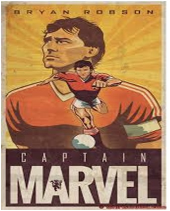
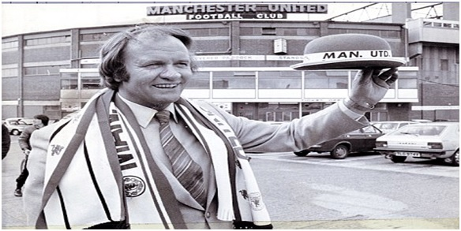

Chương 21

ùa hè 1981, HLV Ron Atkinson, biệt danh Ron lớn, dẫn West Bromwich Albion sang Hoa Kỳ du đấu. Tại một quán bar ở Florida, ông tình cờ hội ngộ Frank Worthington, cựu tuyển thủ Anh, hiện đang đá thuê cho Tampa Bay Rowdies thuộc giải nhà nghề Mỹ. Trà dư tửu hậu, hai người bàn chuyện về Manchester United.
-Bác này, em biết HLV sắp tới của United là ai đấy- Worthington nói.
-Ừ, anh biết. Là Lawrie McMenemy – Atkinson đáp.
-Không phải đâu.
-Thế thì ai nào?
-Bác chứ ai nữa.
-Hớ hớ - Atkinson cười phá lên – Tao mới ghê chứ!
Thế mà lại thật. Sau khi sa thải Dave Sexton, United tìm cả tháng trời không ra HLV. Laurie McMenemy (Southampton), Bobby Robson (Ipswich) và Ron Saunders (Aston Villa) đều từ chối về Old Trafford, buộc CLB phải chuyển mục tiêu sang Ron Atkinson, người từng dẫn dắt West Brom đánh bại Quỷ Đỏ 5-3 năm 1978, trong một trận cầu thuộc loại hấp dẫn nhất mọi thời.
Nhận lời mời, Atkinson rất do dự, bởi ông đang thành công với West Brom, mấy năm nay năm nào cũng lọt vào Top 4. Ông quyết định cứ đi gặp Martin Edwards, nếu được sẽ ký hợp đồng, không thì thôi. Trong buổi gặp gỡ, bàn xong vấn đề chuyên môn, Atkinson hỏi ngay United định cấp cho mình xe gì để di chuyển.
-Ông Sexton có một chiếc Rover – Edwards trả lời.
-Rover? Tôi cũng có một con chó tên là Charlie, thưa ngài chủ tịch. Nhưng đây mình đang bàn chuyện xe cộ cơ mà!
Có kè một hồi, Edwards đồng ý cấp cho Atkinson một chiếc Mercedes mới cáu. Thấy vị chủ tịch thông minh, dễ mến, lại chịu chơi, Atkinson bắt tay nhận lời về làm HLV trưởng. Lúc Ron lớn đến, United đã 14 năm trường chưa VĐQG. Là người thực tế, ông không đảm bảo với Edwards sẽ giúp đội giải cơn khát danh hiệu, trước mắt chỉ đặt mục tiêu mỗi năm giành quyền dự Cúp Châu Âu, ít nhất là Cúp C3. Làm chuyện nhỏ trước, rồi từ từ tính chuyện lớn.
Để thực hiện mục tiêu, đương nhiên cần tăng cường nhân sự. Atkinson không ngăn được Joe Jordan bỏ sang AC Milan, nhưng bù lại, sắm về Frank Stapleton và Remi Moses. Đáng chú ý nhất, ông kéo học trò cũ Bryan Robson, tức Robbo, từ West Brom sang Old Trafford, với mức giá kỷ lục 1.5 triệu bảng. Vụ mua Robson là thương vụ thành công nhất của Atkinson. Tiền vệ này có lối chơi bao sân, nhãn quan chiến thuật sắc sảo, và khả năng công thủ toàn diện;khi sung sức, có thể một mình gánh đội bóng trên vai. Đến Old Trafford chưa lâu, Robson đã tiếp quản băng đội trưởng từ Ray Wilkins. Là thủ lĩnh ở cả United lẫn ĐTQG Anh, anh được người hâm mộ tặng cho mỹ danh “tuyệt thế thủ quân” (Captain Marvel).

Tuyệt Thế Thủ Quân Bryan Robson (Ảnh: Tshirtsunited.com)
“Vừa nhận việc, tôi mua ngay Robson”, Atkinson kể, “Khi tôi còn ở West Brom, Robson đã muốn sang United, nhưng tôi bảo: Đừng mơ, trừ khi tôi sang đấy trước, tôi sẽ kéo cậu theo. Hôm tôi ký hợp đồng với United, Robson đang tập trung ở Thụy Sỹ với tuyển Anh, vậy mà nghe tin, liền gọi ngay nhắc tôi: Thầy ơi, nói thì giữ lời đấy nhé. Vậy là tôi không dụ gì cậu ta, cậu ta dụ tôi đấy chứ.”
Người phản đối vụ mua Robson quyết liệt nhất là Matt Busby. Sir Matt không ghét gì Robson, chỉ không chấp nhận cái giá quá cao: Vừa bỏ hơn một triệu mua “thùng rác” Birtles, nay lại vung thêm triệu rưỡi, cứ như thế thì loạn mất! Không ngăn được Martin Edwards, Busby tỏ thái độ bằng cách từ chức, rút khỏi BLĐ CLB. May cho Quỷ Đỏ, lần này Busby đã nhận định sai lầm. Robson không phải Birtles thứ hai, mà sẽ đeo băng thủ quân United trong suốt 12 năm trời, trở thành một huyền thoại. Trong 12 năm ấy, anh thật sự là chỗ dựa tinh thần của đàn em, là cánh tay nối dài của HLV trưởng. Ai mới nhập đội, anh giang tay chào đón, chỉ bảo tận tình; đồng đội nào gặp khó, anh ân cần hỏi han, giúp đỡ. Trong CLB nảy sinh vấn đề gì, không cần đến HLV can thiệp, Robson lập tức họp đội để đứng ra tìm cách giải quyết. Nếu chê Robson, chỉ có thể chê ở điểm anh quá hay nhậu nhẹt mà thôi.
Một nhân vật khác rất quan trọng cũng được đưa về Old Trafford, không phải cầu thủ nào, mà là trợ huấn Eric Harrison. Harrison là bạn của Atkinson từ thời cả hai đi nghĩa vụ quân sự, nay được mời phụ trách hệ thống đào tạo trẻ tại United. Từ vườn ươm Harrison, hàng loạt tài năng sẽ ra đời, đem lại biết bao vinh quang cho Atkinson, rồi sau đó là Alex Ferguson. Có thể kể một số cái tên như Norman Whiteside, Mark Hughes, Ryan Giggs, David Beckham, Paul Scholes[1]…
Norman Whiteside làm gợi nhớ đến Duncan Edwards thuở nào. Anh ra mắt vào cuối mùa 1981-1982, gây ấn tượng mạnh đến nỗi được gọi ngay vào ĐTQG Bắc Ireland dự World Cup Espana. Tại TBN, Whiteside phá kỷ lục của Pele, trở thành cầu thủ trẻ nhất ra sân trong khuôn khổ Cúp Thế Giới (17 tuổi 41 ngày). Anh đá chính tất cả các trận, giúp Bắc Ireland vào đến vòng đấu bảng thứ hai. Trở về Old Trafford, Whiteside ghi 14 bàn trong mùa 1982-1983, nhanh chóng trở thành trụ cột của United.
Tiền đạo người xứ Wales Mark Hughesra mắt muộn hơn một chút, từ năm 1983. Hughes không ghi quá nhiều bàn, song khả năng kiến thiết bóng thuộc loại nhất hạng. Kỹ thuật cá nhân của anh cũng không quá xuất sắc, nhưng nghệ thuật cầm, che và giữ bóng thì khó ai sánh bằng. Hughes là mắt xích quan trọng trong lối chơi phản công nhanh của United cuối những năm 1980, đầu 1990. Mỗi khi các hậu vệ áo đỏ cướp được bóng, họ thường phất cho Hughes, anh giữ vai cầm banh, thu hút đối thủ, để đồng đội có thời cơ băng lên chiếm giữ những vị trí xung yếu.
Với những nhân tài kể trên, cùng hai ngôi sao được mua về trong mùa 1982-1983: tiền vệ người Hà Lan Arnold Muhren và trung vệ thép Paul McGrath, Atkinson có trong tay đội hình rất mạnh, xét từng cá nhân thì không kém mấy so với Liverpool, đội bóng đang thống trị nền túc cầu Âu châu. Vậy mà dưới thời Ron lớn, United không sao thắng nổi giải Hạng Nhẩt. Vị trí cao nhất đội đạt tới chỉ là hạng ba.
Vì sao lại thế? Chính vì cung cách huấn luyện và quản lý của Atkinson. Tính tình xuề xòa, thân mật, Atkinson rất gần gũi với cầu thủ. Ông đặt biệt hiệu cho Ray Wilkins là “con cua”, gọi Mark Hughes là Sparky, hay bày ra những trò vui làm không khí Old Trafford trở nên nhộn nhịp. Có điều, Atkinson dễ dãi đến độ…lười biếng. Trái ngược hẳn với tiền nhiệm Sexton, người bày ra những bài chiến thuật phức tạp, trên sân tập, Ron lớn hầu như chỉ có mỗi một bài là chia học trò ra hai phe đấu nhau. Không máy chiếu, không bảng đen, ít phân tích ưu-khuyết, ông chủ trương “vô vi”, cứ để học trò tự đá, lại cũng không chú trọng việc rèn thể lực, cả thầy lẫn trò đều đi trễ về sớm, mỗi ngày không luyện được mấy.
Cứ như lời Nikola Jovanovic, tệ bê tha, nghiện rượu đã phổ biến ở Old Trafford từ lúc Dave Sexton còn tại vị. Đến thời Atkinson, do ôngthả lỏng cho cầu thủ vui vẻ, nạn này càng trở nên trầm trọng. “Tập xong, cả đội hay kéo nhau ra quán, ngồi đến sáng”, Frank Stapleton cho biết, “Tôi chỉ uống vài vại bia rồi về sớm, chứ các khứa kia uống nhiều lắm. Uống ít một tí thì chắc đội bóng đã giành được nhiều thành tích hơn. Người ta bảo cầu thủ Liverpool hay nhậu, nhưng tôi thấy Hansen và Lawrenson có thế đâu, Dalglish và Souness cũng không đến nỗi bợm. Nói chung, họ vẫn biết đâu là giới hạn, còn đội mình cứ tràn cung mây.”
Trong số những trụ cột United, Whiteside, Robson và McGrath rất hay dính chấn thương, đồng thời cũng là ba tay trùm nhậu[2]. Chấn thương thì có thời gian nhậu nhiều, mà nhậu nhiều thì thương tích khó lành. Cái vòng luẩn quẩn khiến cả ba ít khi đá được trọn vẹn cả mùa.
Người khác vắng mặt còn đỡ, chứ mỗi khi thiếu Robson, hậu quả đặc biệt nghiêm trọng, bởi anh không những chơi hay, mà còn là người truyền lửa cho đồng đội. “Chúng tôi không phải đội bóng một người đâu, ngoài Robson vẫn còn các cầu thủ giỏi khác chứ”, Atkinson nói, “Nhưng dĩ nhiên anh ấy là siêu sao, có thể một mình tạo nên sự khác biệt. Tôi dám quyết rằng nếu Robson không hay chấn thương, United đã VĐQG mấy lần rồi”. Người hâm mộ Quỷ Đỏ cũng đồng tình với Ron lớn. “Giá mà Robbo có mặt”, hay “Robbo trở lại, mọi thứ sẽ ổn thôi” là những câu cửa miệng của họ mỗi khi CLB gặp khó khăn.
Với lối sống buông thả, cùng thể lực không bảo đảm, dễ hiểu khi United không thể cạnh tranh trong cuộc đua đòi hỏi sức bền và độ ổn định như giải VĐQG. Vào một ngày sung mãn, họ có thể giành chiến thắng oanh liệt trước những Liverpool, Arsenal, Aston Villa; mà trúng một buổi không đẹp trời, có thể thua thê thảm những Luton, Watford hay Stoke. Không đủ sức chạy đường dài, United tập trung hết năng lượng cho những cuộc đấu tay đôi với Liverpool: Với không tới chức vô địch, thì đánh bại đại kình địch cũng sướng. Liverpool bấy giờ xưng bá thiên hạ, song gặp Quỷ Đỏ cứ hay thua, nên CĐV họ thù thấu xương, có lần đem cả hơi cay ra xịt đối thủ.
“Lần đó chúng tôi vừa xuống xe thì thình lình bị xịt gì đấy vào mặt”, Ron lớn tường thuật, “Mới đầu tưởng là sơn, sau mới biết hơi cay…Mắt ai cũng cay xè…Clayton Blackmore bị nặng đến độ không thi đấu được. Tôi cũng gần mù. Chạy đến gần phòng thay đồ, tôi thấy có hai người chắn đường mà không biết là ai, bèn đẩy một đứa ngã dúi vào tường. Trợ lý Mick Brown đứng bên lên tiếng: “Sao anh lại đánh Johnny Sivebaek?” A, té ra đó là Sivebaek. Tội nghiệp, cậu ta vừa gia nhập đội tuần trước, chả biết nói tiếng Anh, chưa kịp ra sân đã ăn hơi cay, rồi lại bị chính ông thầy mình xô té dúi dụi!”

Ron Atkinson ngày mới đến Old Trafford (Ảnh: Dailymail.co.uk)
Chú thích:
[1] Về Eric Harrison, xin xem thêm Sao Của Ngàn Sao – Cuộc Đời Và Sự Nghiệp David Beckham (Nguyễn Minh, 2013).
[2]Norman Whiteside từ một cậu bé ngây thơ không biết mùi bia rượu, bị đồng đội rủ rê mà hóa ra nghiện ngập. Chính Atkinson đã khuyến khích Whiteside uống thử bia, sau đó lại xếp anh ở chung nhà trọ với bợm nhậu Paul McGrath. Whiteside nhanh chóng học theo thói xấu của đàn anh.